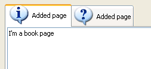

| Version: 2.9.4 |
#include </home/zeitlin/src/wx/github/interface/wx/notebook.h>
 Inheritance diagram for wxNotebook:
Inheritance diagram for wxNotebook:This class represents a notebook control, which manages multiple windows with associated tabs.
To use the class, create a wxNotebook object and call wxNotebook::AddPage or wxNotebook::InsertPage, passing a window to be used as the page. Do not explicitly delete the window for a page that is currently managed by wxNotebook.
wxNotebookPage is a typedef for wxWindow.
This class supports the following styles:
The styles wxNB_LEFT, RIGHT and BOTTOM are not supported under Microsoft Windows XP when using visual themes.
The following event handler macros redirect the events to member function handlers 'func' with prototypes like:
Event macros for events emitted by this class:
wxEVT_COMMAND_NOTEBOOK_PAGE_CHANGED event. wxEVT_COMMAND_NOTEBOOK_PAGE_CHANGING event. This event can be vetoed. On Windows XP, the default theme paints a gradient on the notebook's pages. If you wish to suppress this theme, for aesthetic or performance reasons, there are three ways of doing it. You can use wxNB_NOPAGETHEME to disable themed drawing for a particular notebook, you can call wxSystemOptions::SetOption to disable it for the whole application, or you can disable it for individual pages by using SetBackgroundColour().
To disable themed pages globally:
wxSystemOptions::SetOption("msw.notebook.themed-background", 0);
Set the value to 1 to enable it again. To give a single page a solid background that more or less fits in with the overall theme, use:
wxColour col = notebook->GetThemeBackgroundColour(); if (col.IsOk()) { page->SetBackgroundColour(col); }
On platforms other than Windows, or if the application is not using Windows themes, GetThemeBackgroundColour() will return an uninitialised colour object, and the above code will therefore work on all platforms.
|  |  |  |
| wxMSW appearance | wxGTK appearance | wxMac appearance |
Public Member Functions | |
| wxNotebook () | |
| Constructs a notebook control. | |
| wxNotebook (wxWindow *parent, wxWindowID id, const wxPoint &pos=wxDefaultPosition, const wxSize &size=wxDefaultSize, long style=0, const wxString &name=wxNotebookNameStr) | |
| Constructs a notebook control. | |
| virtual | ~wxNotebook () |
| Destroys the wxNotebook object. | |
| bool | Create (wxWindow *parent, wxWindowID id, const wxPoint &pos=wxDefaultPosition, const wxSize &size=wxDefaultSize, long style=0, const wxString &name=wxNotebookNameStr) |
| Creates a notebook control. | |
| virtual int | GetRowCount () const |
| Returns the number of rows in the notebook control. | |
| virtual wxColour | GetThemeBackgroundColour () const |
| If running under Windows and themes are enabled for the application, this function returns a suitable colour for painting the background of a notebook page, and can be passed to SetBackgroundColour(). | |
| void | OnSelChange (wxBookCtrlEvent &event) |
| An event handler function, called when the page selection is changed. | |
| virtual void | SetPadding (const wxSize &padding) |
| Sets the amount of space around each page's icon and label, in pixels. | |
| virtual int | GetPageImage (size_t nPage) const |
| Returns the image index for the given page. | |
| virtual bool | SetPageImage (size_t page, int image) |
| Sets the image index for the given page. | |
| virtual wxString | GetPageText (size_t nPage) const |
| Returns the string for the given page. | |
| virtual bool | SetPageText (size_t page, const wxString &text) |
| Sets the text for the given page. | |
| virtual int | GetSelection () const |
Returns the currently selected page, or wxNOT_FOUND if none was selected. | |
| virtual int | SetSelection (size_t page) |
| 指定されたページを選択し、以前選択していたページを返却します。 | |
| virtual int | ChangeSelection (size_t page) |
| 指定されたページを変更し、以前選択していたページを返却します。 | |
| virtual bool | InsertPage (size_t index, wxWindow *page, const wxString &text, bool select=false, int imageId=NO_IMAGE) |
| Inserts a new page at the specified position. | |
| wxNotebook::wxNotebook | ( | ) |
Constructs a notebook control.
| wxNotebook::wxNotebook | ( | wxWindow * | parent, |
| wxWindowID | id, | ||
| const wxPoint & | pos = wxDefaultPosition, |
||
| const wxSize & | size = wxDefaultSize, |
||
| long | style = 0, |
||
| const wxString & | name = wxNotebookNameStr |
||
| ) |
Constructs a notebook control.
Note that sometimes you can reduce flicker by passing the wxCLIP_CHILDREN window style.
| parent | The parent window. Must be non-NULL. |
| id | The window identifier. |
| pos | The window position. |
| size | The window size. |
| style | The window style. See wxNotebook. |
| name | The name of the control. |
| virtual wxNotebook::~wxNotebook | ( | ) | [virtual] |
Destroys the wxNotebook object.
| virtual int wxNotebook::ChangeSelection | ( | size_t | page | ) | [virtual] |
指定されたページを変更し、以前選択していたページを返却します。
This function behaves as SetSelection() but does not generate the page changing events.
See User Generated Events vs Programmatically Generated Events for more information.
Implements wxBookCtrlBase.
| bool wxNotebook::Create | ( | wxWindow * | parent, |
| wxWindowID | id, | ||
| const wxPoint & | pos = wxDefaultPosition, |
||
| const wxSize & | size = wxDefaultSize, |
||
| long | style = 0, |
||
| const wxString & | name = wxNotebookNameStr |
||
| ) |
Creates a notebook control.
See wxNotebook() for a description of the parameters.
Reimplemented from wxBookCtrlBase.
| virtual int wxNotebook::GetPageImage | ( | size_t | nPage | ) | const [virtual] |
Returns the image index for the given page.
Implements wxBookCtrlBase.
| virtual wxString wxNotebook::GetPageText | ( | size_t | nPage | ) | const [virtual] |
Returns the string for the given page.
Implements wxBookCtrlBase.
| virtual int wxNotebook::GetRowCount | ( | ) | const [virtual] |
Returns the number of rows in the notebook control.
| virtual int wxNotebook::GetSelection | ( | ) | const [virtual] |
Returns the currently selected page, or wxNOT_FOUND if none was selected.
Note that this method may return either the previously or newly selected page when called from the EVT_BOOKCTRL_PAGE_CHANGED handler depending on the platform and so wxBookCtrlEvent::GetSelection should be used instead in this case.
Implements wxBookCtrlBase.
| virtual wxColour wxNotebook::GetThemeBackgroundColour | ( | ) | const [virtual] |
If running under Windows and themes are enabled for the application, this function returns a suitable colour for painting the background of a notebook page, and can be passed to SetBackgroundColour().
Otherwise, an uninitialised colour will be returned.
| virtual bool wxNotebook::InsertPage | ( | size_t | index, |
| wxWindow * | page, | ||
| const wxString & | text, | ||
| bool | select = false, |
||
| int | imageId = NO_IMAGE |
||
| ) | [virtual] |
Inserts a new page at the specified position.
| index | Specifies the position for the new page. |
| page | Specifies the new page. |
| text | Specifies the text for the new page. |
| select | Specifies whether the page should be selected. |
| imageId | Specifies the optional image index for the new page. |
Implements wxBookCtrlBase.
| void wxNotebook::OnSelChange | ( | wxBookCtrlEvent & | event | ) |
An event handler function, called when the page selection is changed.
| virtual void wxNotebook::SetPadding | ( | const wxSize & | padding | ) | [virtual] |
Sets the amount of space around each page's icon and label, in pixels.
| virtual bool wxNotebook::SetPageImage | ( | size_t | page, |
| int | image | ||
| ) | [virtual] |
Sets the image index for the given page.
image is an index into the image list which was set with SetImageList().
Implements wxBookCtrlBase.
| virtual bool wxNotebook::SetPageText | ( | size_t | page, |
| const wxString & | text | ||
| ) | [virtual] |
Sets the text for the given page.
Implements wxBookCtrlBase.
| virtual int wxNotebook::SetSelection | ( | size_t | page | ) | [virtual] |
指定されたページを選択し、以前選択していたページを返却します。
Notice that the call to this function generates the page changing events, use the ChangeSelection() function if you don't want these events to be generated.
Implements wxBookCtrlBase.